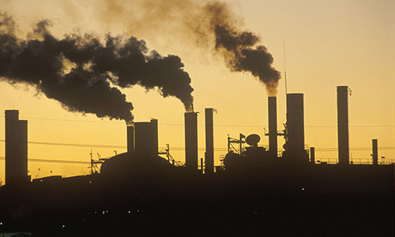

|
|||||
|
|||||
|
 核空气污染，又称为大气污染，是指由于人类活动或自然过程引起某些物质进入大气中，呈现出足够的浓度，达到足够的时间，并因此危害了人体的舒适、健康和福利或环境的现象。当大气中污染物质的浓度达到有害程度，以至破坏生态系统和人类正常生存和发展的条件，对人或物造成危害的现象叫做大气污染。2014年1月14日，2013年《中国气候公报》正式公布，2013年的霾天创52年来最多，PM2.5被确认为致癌物。2015年11月，中国清洁空气联盟秘书处发布《大气污染防治行动计划（2013—2017）实施的投融资需求及影响》研究报告指出：大气污染防治行动计划实施的直接投资共需1.84万亿元，中央财政投入规模相比实际需求落差较大，中国大气污染治理仍然存在投资总量严重不足等问题 |
||||
Copyright 2019 - 2021 南工院 移动1813 朱妍版权所有